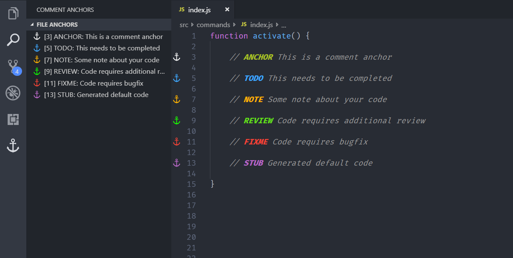
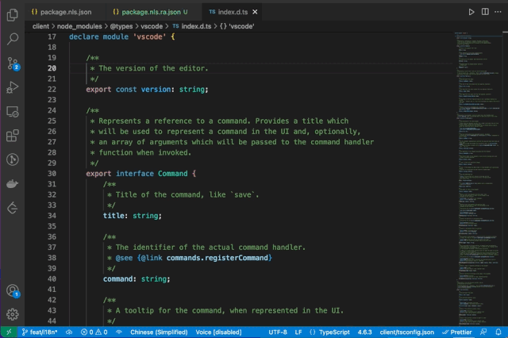
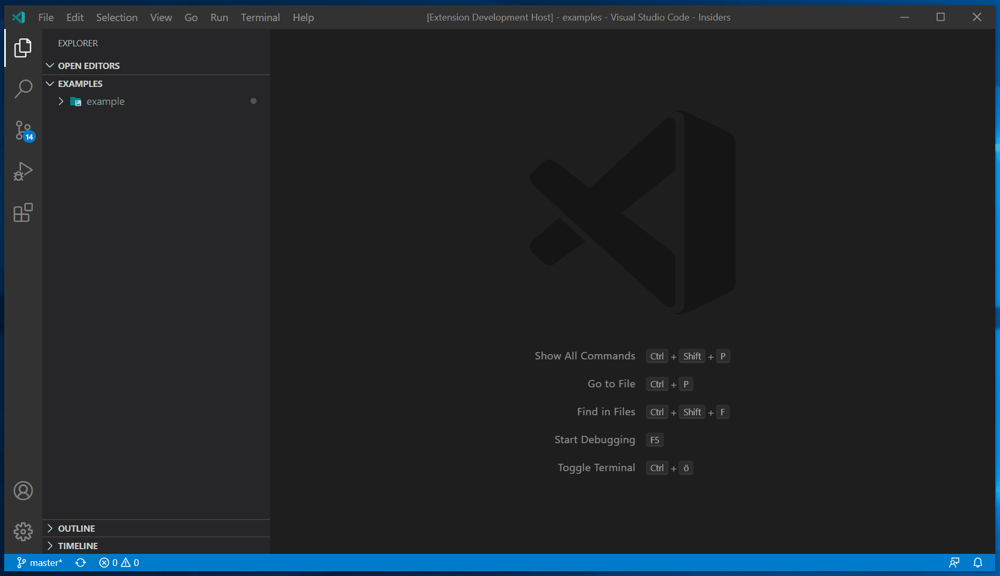
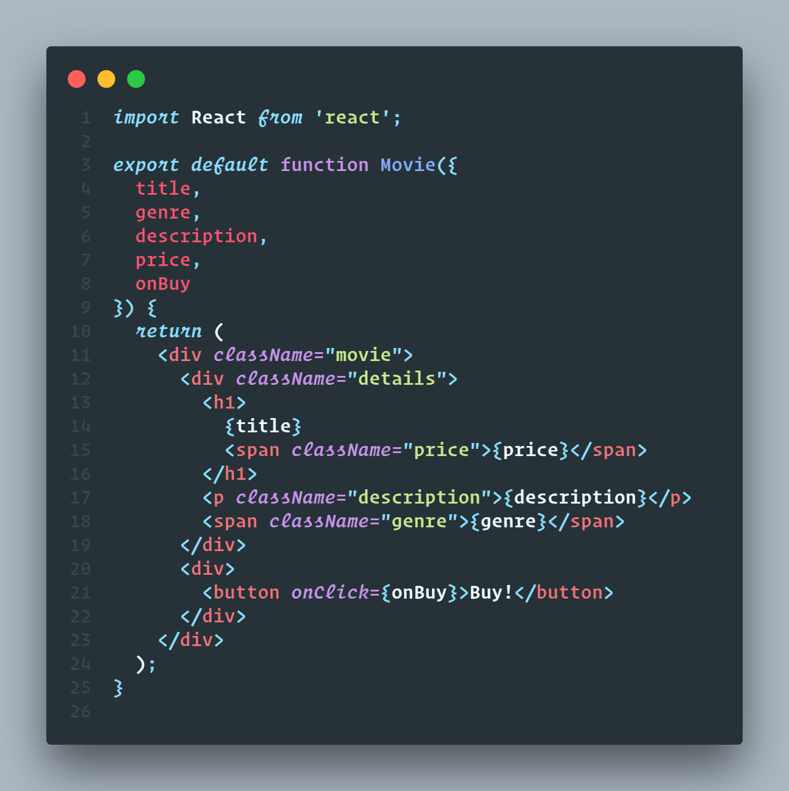

VSCode插件归纳
最近因为某些原因工作变动，原本工作的电脑要归还，新电脑需要搭建新的开发环境。安装一些合适的、好用的VSCode插件真的是能够大大提升开发效率，所以今天来整理下工作中常用的、好用的一些VSCode插件，对以后更换或者升级设备也会有帮助。
Tabnine AI
Tabnine AI 是我目前用的过最好用的智能代码提示插件，其免费的功能完全够用，如果想使用更高级的功能可以选择付费版。相同功能的插件还有 Github Copilot，前段时间比较热门的代码智能提示插件，由 Github 重磅打造，不过后面传出其只能提示的代码是从github上查找类似的代码直接复制到本地，一不小心会造成抄袭的问题🐶 ，而且听说同样需要收费。
Tabnine AI 基于本地代码，你曾经写过的一些内容，智能提取出接下来你可能要写的内容，比如已经写好的变量名称，或者格式类似的另一段代码，基本可以只使用回车就能够完成一段代码的书写。

Auto Close Tag
我们在写HTML过程中，包括React的JSX和Vue的template，都会去写一些HTML标签，常常写完开始标签后，会忘记写关闭标签，或者关闭标签写成了开始标签，或者需要写完之后再回到中间来写标签内容，Auto Close Tag就是一款能够自动关闭标签的插件，在我们写好开始标签后会自动插入结束标签。

也可以手动命令或者快捷键添加关闭标签（Win下Alt + .，Mac下Command + options + .）。

Auto Rename Tag
这款插件也是用于操作开始和结束标签的，如果我们想修改标签名称或者组件名称的话，需要修改开始标签，然后复制替换掉结束标签，这个插件则是在我们修改开始标签时，实时查找结束标签并修改成对应的名称。
Auto Close Tag和Auto Rename Tag的作者又开发了一款插件Auto Complete Tag将这两个插件的功能整合到了一起，具体参考 Auto Complete Tag
Auto Import
Auto Import 是另一款非常好用的插件，我们在写TS的时候，尤其是写TSX的时候，常常会写非常多的 import，当代码量非常大时，经常需要上下来回倒，去引入新的组件，而Auto Import则在我们添加方法组件时，自动帮我们引入对应的方法名称，非常的便捷。需要注意的是只能在TS文件中生效。
Path Autocomplete
刚才也说到了，Auto Import只能在TS环境下工作，那如果在JS或者html中如何能方便快捷的查找路径呢？Path Autocomplete可以提供路径的自动建议，当你在输入./或者其他的路径相关的字符时，Path Autocomplete可以自动查找相关的路劲，并进行提示，也是一种比较方便的操作。
Highlight Matching Tag
Highlight Matching Tag是用于高亮匹配的标签对的插件，在VSCode自带的标签匹配功能中，对匹配到的标签对，仅仅对添加了一个underline的样式，不是非常的明显，很容易被忽略，Highlight Matching Tag则是对这个样式进行了增强：加深了下划线的颜色，在右侧滚动条处进行了行标记，即使是在属性中添加的标签，也能进行高亮处理。
Auto Comment Blocks
Auto Comment Blocks 是可以帮助我们自动完成注释的结束符号，也能在多行注释换行的时候自动格式化，功能和以上的Auto比较类似。

Better Comment
我们在写注释的过程中是不是会有一个问题，就是注释的样式太过单一，想做一个比较突出或者重点的标注，却没有什么好方法？Better Comment 就是一款帮助我们做这些事情的插件，他可以通过一些特殊的格式，对重点区域进行高亮标注。
根据注释的类型，它将注释划分为警告（Alert）、查询（Queries）、待办（TODOs）、高亮（Highlights）等。
还可以通过配置选项设置一些你自己需要的注释类型。
1 | "better-comments.tags": [ |
Comment Anchors
Comment Anchors是通过注释可以对项目的代码进行大点，我们可以通过左侧的船锚标志，快速的找到项目打过点的位置。
Comment Anchors 默认设置带有以下标签的锚点：
- ANCHOR - 用于指示文件中的一个部分
- TODO - 等待完成的项目
- FIXME - 需要修正错误的项目
- STUB - 用于生成的默认片段
- NOTE - 特定代码部分的重要说明
- REVIEW - 需要额外审查的项目
- SECTION - 用于定义区域（参见“分层锚点”）
- LINK - 用于链接到可以在编辑器中打开的文件（请参阅“链接锚点”）
需要注意的是，所有字母一定要大写，并且就算不是在注释内，它也是生效的（可能是个bug 罒ω罒）。
不同的锚点有着不同的颜色：

不同的锚点也有着不同的功能，也可以配置默认以外的锚点，详细请见Comment Anchors
Comment Translate
接下来是一个对于看源码来说非常好用的一个插件Comment Translate，它使用谷歌翻译，在鼠标hover注释时，能够快速的把英文翻译成中文，这对于经常看源码但是英文又不好的同学来说，简直是一个福利性插件。

Draw.io
Draw.io，一个把画表制图搬到了VSCode的插件，它采用的Draw.io的离线版本，可以在VSCode中编辑以.drawio、.dio、.drawio.svg、.drawio.png结尾的文件，还支持以上几种格式的互相转换。

Prettier
接下来是我最喜欢的一款插件-Prettier，在刚参加工作的前几年时，对代码格式不是特别的严谨，写出来的代码歪七扭八，很多时候都会被ESLint给拦截住，Prettier给了我很大的帮助，他可以自动将杂乱的代码格式化成整洁的代码，通篇看下来沁人心脾，而我在使用的过程中也受到了Prettier的影响，在写的时候就会自觉地调整代码的格式，保持整体的一个整洁程度。而且Prettier也可以和ESLint做联动，不管是对于整理代码风格还是形成良好的代码习惯，都会有很大的帮助。
当然也有需要注意的地方，因为它会对保存过的文件进行格式化，所以对于团队来说，大家都使用Prettier是最好不过的，否则可能会出现代码冲突等问题。
CodeSnap
不知道你们在看博客的时候，有没有看到过别人展示出来的一张非常好看的代码的图片，没错，CodeSnap就是这么一个插件，它可以根据你当前编辑器的主题，将你的代码转换成不同的风格，并且生成对应的图片。
而且它非常的简单易用，只需要选中你想图片化的代码，然后Cmd + Shift + P, 然后选择CodeSnap就可以预览图片，然后我们重新选择其他的代码，图片也会实时变化，点击快门键就会进行保存。

总结
写了这么多，还是有很多好用的插件没有来得及写上，后续有机会的话，会再继续完善补充，那么，大家再见！